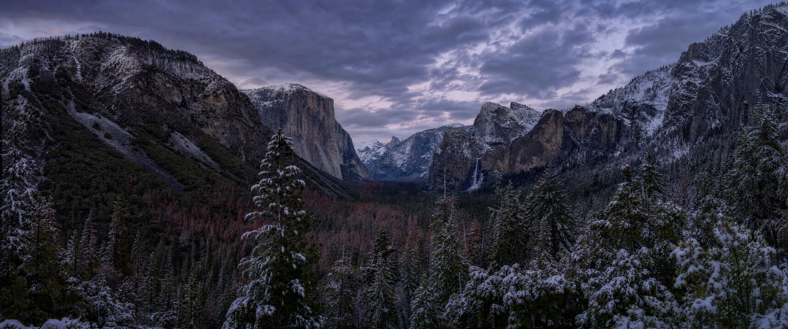

Catppuccin MochaDark companion
WorkspaceNotesTerminal
~/projects on main
# A quiet place to work
const landscape = Yosemite;
✓ Ready when you are
ContinueSelected item
Catppuccin LavenderLight companion
WorkspaceNotesTerminal
~/projects on main
# A quiet place to work
const landscape = Yosemite;
✓ Ready when you are
ContinueSelected item